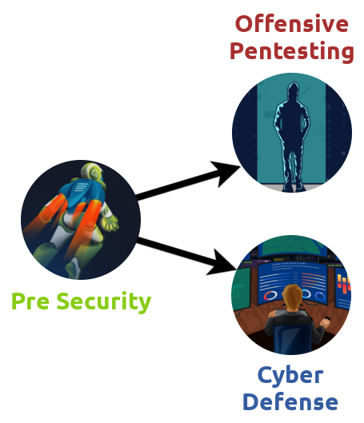

Learning Path: Pre Security/Introduction
Task 1 - Web Application Security
Why understanding how the web works is important
To attack web applications, you need to understand how they work. Hacking websites isn't some magical process but does come down to knowing how a part of a website functions and being able to identify weaknesses to take advantage of. Once you have a good understanding of the fundamentals, you'll learn about the techniques and tools used in hacking sites.
If something is vulnerable, it means there is the possibility of it being attacked or harmed. If an application or system has a vulnerability, there is something that can be attacked or taken advantage of (a weakness).
Task 2 - Network Security
Why networking is important
Networking is really important to understand in cyber security. From scanning and identifying who and what is on a network, to reviewing network logs to monitor and track what users have been up to will require you to have an understanding of how networks work.
We will walk you through the networking concepts and give you enough knowledge to get started in your cyber security journey.
Task 3 - Learning Roadmap
Above is a learning path roadmap. The Pre Security path will teach you the technical knowledge you need to get started in cyber security. Once you understand the basics, enroll in either the Offensive Pentesting (ethically hacking systems) or the Cyber Defense (investigating attacks and defending systems) path.
The skills you acquire from the learning paths will prepare you for a career as an ethical hacker, penetration tester or cyber security analyst.